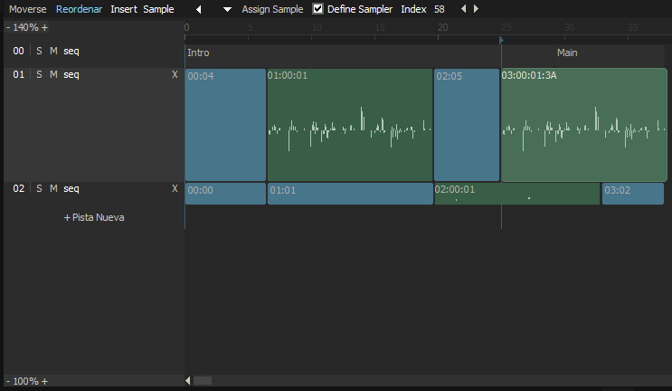

The Sequence Bar Editor
The Sequence Bar Editor is an extension to the Sequence Editor and a new way where you can organise your patterns, and is located on the bottom side of the Machines window (F2). The song progresses from left to right, and each line represents a sequence track holding the sequence entries, that can contain a pattern, a marker or a sample bar. The number on the left is the position number in the track, and on the right there is either the pattern number or the sampleindex and optional the samplerindex if assigned different than the song property one. You may use the same indexes of pattern or samples in more than one position.
|  |
| Move – Sets the drag mode of a bar to move. Moving means
adding an offset to the playlist order position to change the position
Reorder – Sets the drag mode of a bar to reorder. Dragging in a track will swap the bars. Insert – Sets the insert type of a new entry. A new entry is inserted with a double click. Insert types are Marker, Pattern or Sample Assign Sample – The Assign Sample Button appears if a sample entry is selected. The selected Entry will be assigned with the Sample Index selected in the Samples Mainview. The Sample will be played with the song sampler machine defined in Song Properties. To override the song default check Define Sampler and set an machine index for the selected entry New Track – New Track adds a new sequence track to the Editor at the end of the list. Dragging the track index changes the track position. Del (Edit > Sequence Delete) – Right Click on an entry deletes the entry from the track Length (Edit > Sequence Length) – Moving the mouse over the end of a bar let a resize cursor appear. At that point the length can be changed of a pattern and marker entry. The length of a sample entry can't be changed. Select (Edit > Sequence Select) – Pressing the first time on an entry selects it as editposition. Clicking the second time in a pattern entry will go in the patternview to the line of the bar sequence offset. Double click on a Marker Entry will let you edit the marker labelResize (Edit > Sequence Resize) – Moving the mouse over the bottom of a track description let you resize the track height. |